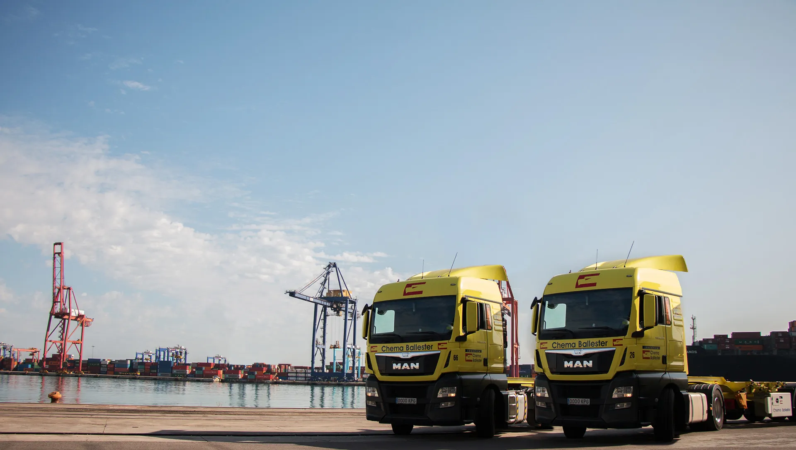

Herramientas
Distancias kilométricas
Consulte la distancia por carretera entre el Puerto de Valencia y cualquier población española.
Ver página actualdesde el Puerto de Valencia
- Población
- Código postal
- Provincia

Herramientas
Consulte la distancia por carretera entre el Puerto de Valencia y cualquier población española.
Ver página actualdesde el Puerto de Valencia